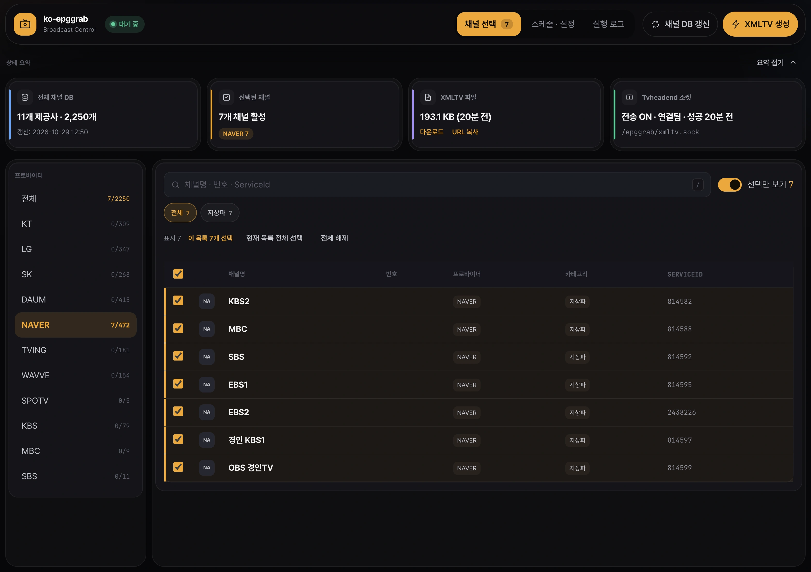
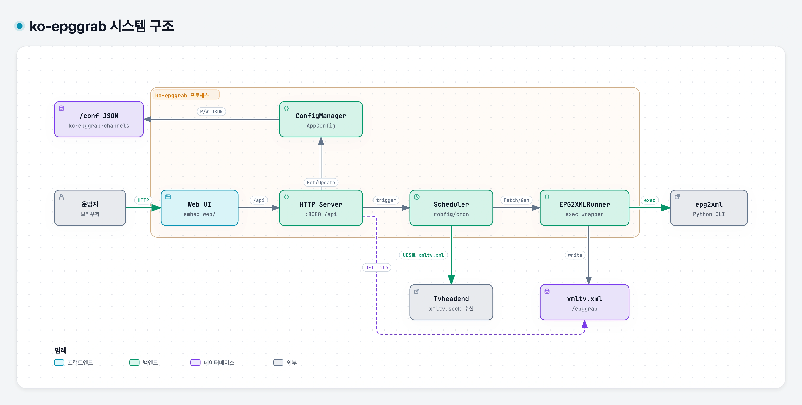
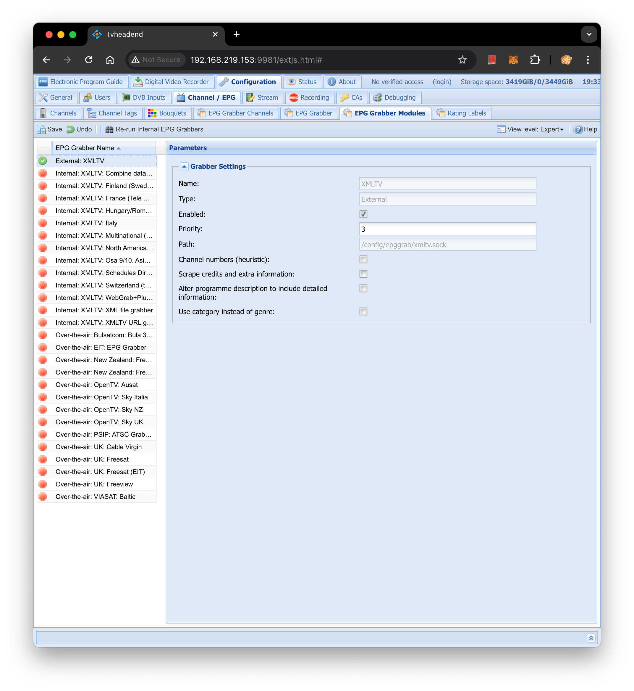
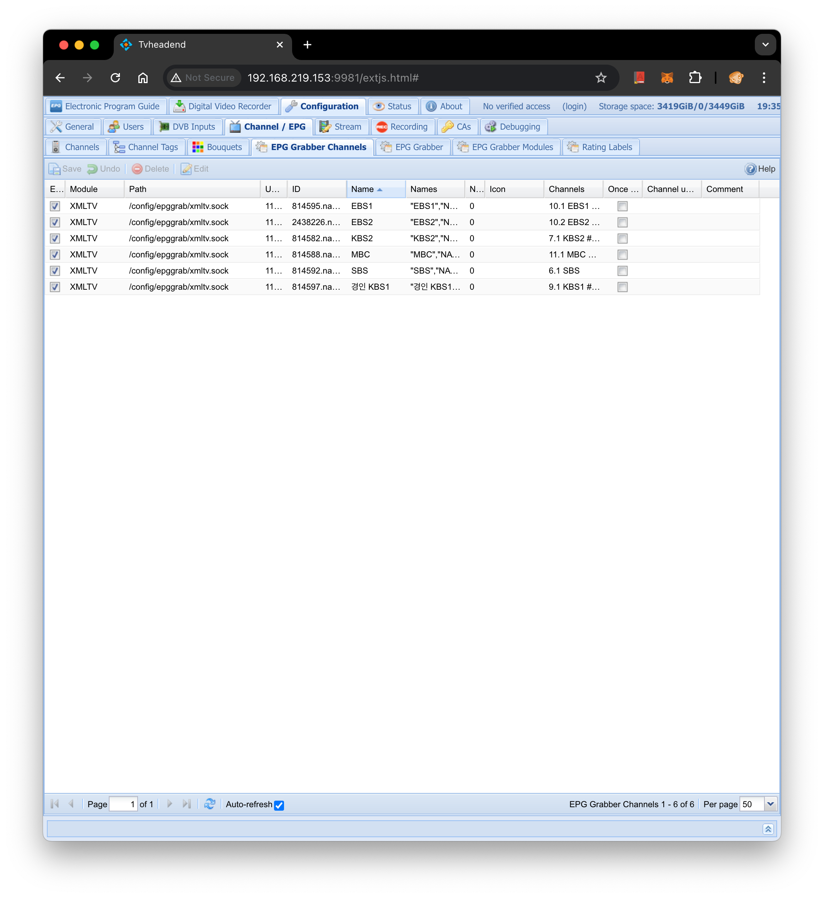

2,250개 채널 탐색과 부분 DOM 갱신
단축키 /로 채널명·채널 번호·ServiceId를 150ms 디바운스로 검색하고, Shift+클릭으로 범위를 일괄 선택합니다. 빈 카테고리는 자동으로 미분류로 묶어 누락 없이 탐색합니다.

부실한 지상파 OTA EPG 대신 11개 웹 제공사의 2,250개 채널 편성표를 수집하는 epg2xml 기반 Go 데몬입니다. 내장 웹 콘솔에서 채널과 Cron 주기를 고르면 xmltv.sock으로 바로 밀어 넣습니다.
11개 제공사 · 2,250채널
NAVER, KT, LG, SK, DAUM, WAVVE, TVING, SPOTV, 지상파 3사 지원
단일 바이너리 내장 UI
복잡한 CLI 플래그 없이 :8080 웹에서 즉시 설정 및 소켓 전송
과거에는 -pc "NAVER:지상파"나 -nf "KBS1,KBS2" 같은 복잡한 플래그를 직접 조합해야 했습니다. 이제 왼쪽에서 채널과 옵션을 토글해 보세요. 오른쪽에서 ko-epggrab.json과 xmltv.xml이 실시간으로 합성됩니다.
수집할 방송 채널 선택
epg2xml 전역 메타데이터 옵션
모든 epg2xml 실행은 단일 워커 뮤텍스로 직렬화되어 충돌을 막습니다. 아래 세 단계를 클릭하거나 스크롤하면 데몬 내부 상태가 어떻게 전이되는지 확인할 수 있습니다.
epg2xml update_channels는 기존 채널 파일이 남아 있으면 갱신하지 않는 특성이 있습니다. 데몬이 먼저 os.Remove로 이전 파일을 지운 뒤 11개 제공사의 최신 채널 목록을 수집합니다.
epg2xml이 설정 파일을 재포맷하더라도 사용자 설정이 유실되지 않도록 /conf/ko-epggrab.json을 원본으로 보존합니다. 실행 직전에 최신 Icon_url과 Category를 매칭해 epg2xml.json을 생성합니다.
생성된 /epggrab/xmltv.xml 파일을 HTTP(GET /xmltv.xml)로 서빙함과 동시에, 공유 볼륨에 마운트된 Tvheadend의 /epggrab/xmltv.sock 유닉스 도메인 소켓으로 즉시 전송합니다.
os.Remove("/conf/epg2xml_channels.json") && epg2xml update_channels/conf/epg2xml_channels.json (11개 제공사 · 2,250개 채널)[2026-10-30 00:00:01] Starting channel list update
[2026-10-30 00:00:01] Removed stale /conf/epg2xml_channels.json
[2026-10-30 00:00:04] Loaded KT(309), LG(347), SK(268), NAVER(472), DAUM(415), WAVVE(154)...
[2026-10-30 00:00:05] Saved 2,250 channels successfully (took 4.1s)
Go 표준 라이브러리의 //go:embed로 내장된 웹 콘솔과 Tvheadend 연동 화면입니다. 컨테이너를 내리지 않고 브라우저에서 모든 스케줄과 채널을 관리합니다.
2,250개 채널 탐색과 부분 DOM 갱신
단축키 /로 채널명·채널 번호·ServiceId를 150ms 디바운스로 검색하고, Shift+클릭으로 범위를 일괄 선택합니다. 빈 카테고리는 자동으로 미분류로 묶어 누락 없이 탐색합니다.

0 */12 * * *
0 0 * * 1
/epggrab/xmltv.sock
Cron 동적 재등록과 비동기 실행
PUT /api/config가 호출되면 기존 robfig/cron/v3 엔트리를 즉시 교체합니다. 소켓 파일이 아직 없더라도 데몬과 웹 서버는 멈추지 않고 상태를 기록합니다.
링 버퍼 실시간 실행 로그와 HTTP 서빙
io.MultiWriter가 epg2xml의 표준 출력과 에러를 메모리 링 버퍼에 동시에 기록합니다. 소켓 공유가 어려운 원격 환경에서는 GET /xmltv.xml 엔드포인트로 직접 편성표를 받아갈 수 있습니다.
[INFO] GET /api/status -> 200 OK (state: idle)
[INFO] Triggered manual action: generate-xmltv
[INFO] epg2xml v2.4.1 run started (18 channels)
[INFO] Writing /epggrab/xmltv.xml (1.42 MB)
[INFO] Sent to /epggrab/xmltv.sock in 42ms
[INFO] GET /xmltv.xml -> 200 OK (application/xml)다크 톤과 시그널 앰버의 방송 제어 콘솔
Proxmox, Tailscale, Tvheadend 옆에 나란히 띄워 두기 편한 깊은 Zinc 다크 표면과 방송 시그널 앰버 액센트로 설계했습니다. 외부 번들러 없이 순수 ES6와 CSS로 동작합니다.
Tvheadend XMLTV 모듈 활성화
Tvheadend의 Configuration → Channel / EPG → EPG Grabber Modules에서 External: XMLTV를 켜면 공유 볼륨의 /config/epggrab/xmltv.sock 경로로 편성표를 수신합니다.


EPG Grabber 채널 자동 매핑
소켓 전송이 완료되면 EPG Grabber Channels 탭에 선택한 한국 방송 채널들이 자동으로 나타납니다. 원한다면 설정 파일 하나만 백업해 다른 서버로 그대로 옮길 수 있습니다.
컨테이너 내부 경로와 리스닝 주소만 환경 변수로 지정합니다. 스케줄과 채널 선택은 모두 ko-epggrab.json에 영속 저장되며, 외부 대시보드에서도 REST API로 제어할 수 있습니다.
인프라 경로 및 부트스트랩 환경 변수
HTTP_ADDR
웹 콘솔 및 REST API 리스닝 주소
KO_EPGGRAB_CONF
런타임 설정 원본 (Single Source of Truth)
EPG2XML_CHANNEL_CONF
11개 제공사 전체 채널 후보 DB
EPG2XML_PROGRAM_CONF
실행 직전 자동 합성되는 epg2xml 설정
XMLTV_XML_PATH
생성될 XMLTV 편성표 파일 경로
XMLTV_SOCK_PATH
Tvheadend XMLTV 유닉스 도메인 소켓
CRON_CHANNEL_FETCH
최초 기동 시 채널 DB 갱신 초기값
CRON_GENERATE_XMLTV
최초 기동 시 XMLTV 생성 초기값
REST 엔드포인트 및 11개 제공사
GET /xmltv.xml
생성된 XMLTV 파일 다운로드 및 HTTP 서빙
GET /api/status
워커 상태, 마지막 실행 결과, 다음 Cron 시각
GET · PUT /api/config
런타임 설정 저장 및 스케줄러 즉시 리로드
POST /api/actions/fetch-channels
전체 채널 목록 갱신 비동기 실행 트리거
POST /api/actions/generate-xmltv
XMLTV 생성 및 UDS 소켓 전송 즉시 실행
GET /api/logs
메모리 링 버퍼의 최근 실행 표준 출력·에러 조회
핵심은 epggrab_data 볼륨을 공유하는 것입니다. Tvheadend는 /config/epggrab에, ko-epggrab은 /epggrab에 마운트해 xmltv.sock을 함께 씁니다.
멀티 아키텍처 이미지(linux/amd64, linux/arm64)가 GitHub Container Registry에 준비되어 있습니다. 컨테이너를 올린 뒤 http://<host>:8080에 접속해 원하는 채널을 고르세요.
ghcr.io/suapapa/ko-epggrab:latest
curl -fsSL -O https://raw.githubusercontent.com/suapapa/ko-epggrab/main/docker-compose.yml && docker compose up -d